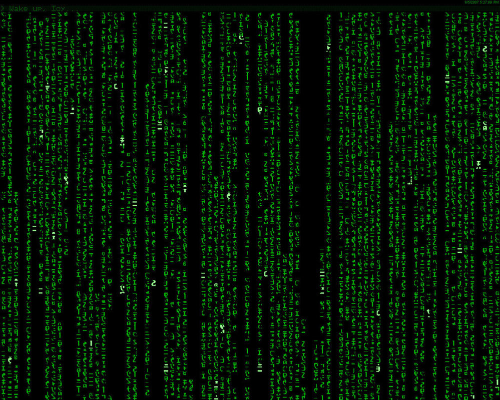

Chapter 3 Lavorare con i dati

Before Starting (again)!
Abbiamo già visto come spostare la working directory in R Studio. Usando i comandi getwd() e setwd() ricordiamoci di selezionare la cartella relativa a questo corso. Per la lezione di oggi vediamo di organizzare la cartella del corso nel seguente modo.
La cartella, chiamata R, deve contenere a sua volta due cartelle: data e source. Nella prima salveremo i dataset che ci interessano, nella seconda lo script R della lezione.
3.1 Pacchetti
R, come molti altri linguaggi di programmazione, ha un core di funzioni già scritte che sono disponibili all’utente, come quelle che abbiamo visto nelle lezioni precedenti. Tuttavia, con il passare del tempo, sono state sviluppate sempre più funzioni che risolvono nuovi problemi e aumentano le potenzialità di R. Tuttavia non è possibile, ne desiderabile, aggiungere tutte queste funzioni al pacchetto base di R: questo lo renderebbe più lento, occuperebbe più memoria e sarebbe pieno di funzioni che l’utente medio non userebbe!
Questa filosofia è applicata a molti altri linguaggi di programmazione che propongono un set fondamentale di funzioni accessibile a tutti (base), e la possibilità di istallare o caricare delle estensioni per svolgere ulteriori compiti particolari.
In R queste estensioni sono i pacchetti (package). Si può accedere alla lista dei pacchetti installati usando il comando library(), senza indicare argomento. Se si indica come argomento il nome di un pacchetto, R caricherà il pacchetto ed il suo contenuto sarà disponibile per l’utente.
Ad esempio, possiamo caricare il pacchetto MASS, che ci sarà utile in seguito, con il comando library(MASS).
Non tutti i pacchetti sono già installati in R, ad esempio il pacchetto hflights non lo è.
library(hflights)Il comando da errore in quanto il pacchetto non è installato e lo possiamo installare usando il comando:
install.packages('hflights')
library(hflights)
# ora il pacchetto viene caricato senza errori!Alcuni pacchetti potrebbero dipendere da altri pacchetti non installati per funzionare. Per indicare a R di installare anche le dipendenze, basta inserire nel comando, dopo il nome del pacchetto l’istruzione install.packages( nome_pacchetto , dependencies = TRUE).
Il comando search() elenca i pacchetti caricati nella sessione.
I pacchetti possono essere prodotti da qualsiasi utente e solitamente sono reperibili usando il comando indicato sopra. Di default R Studio si appoggia al sito cran per reperire i pacchetti.
Qualora il pacchetto desiderato non fosse presente, è possibile indicare un diverso server. Ad esempio, il comando seguente permette di installare un pacchetto presente nei server di Bioconductor.
source("https://bioconductor.org/biocLite.R")
biocLite("RnaSeqTutorial")Analogamente, R Studio permette di installare i pacchetti manualmente, dal menù Tools | Install Packages… | Install from: | Package Archive File.
L’uso del nome del pacchetto seguito da ::, permette di accedere le funzioni e i dataset contenuti nel pacchetto. Questo è molto utile nel caso di omonimia tra funzioni. Specificando il pacchetto si può essere sicuri di usare la funzione desiderata.
3.2 Manipolare dati
R fornisce alcuni dataset già disponibili all’uso, mentre altri se ne possono aggiungere usando specifici pacchetti.
Ad esempio, nella lezione precedente abbiamo lavorato con il dataset mtcars che è già disponibile. Usando i comandi precedenti abbiamo in realtà richiamato il pacchetto MASS che contiene diversi dataset e installato hflights che contiene un altro dataset che ci tornerà utile.
3.2.1 Leggere e scrivere file
Quando si parla di dati o dataset, è possibile acquisirne in diversi modi, non solo attraverso i pacchetti. Uno dei modi più semplici e intuitivi è la lettura da file. Esistono molti formati di che possono contenere dati. I più semplici e diffusi sono i file .csv (comma sepatated values) o i .tsv (tab separated values).
Uno dei comandi più usati per leggere file è il comando read.table(). Questo permette di leggere un file e di salvarlo come data frame. Facciamo un esempio pratico.
Consideriamo il dataset body temperature che contiene i dati relativi alla temperatura corporea di alcuni pazienti. Salviamo il dataset nella cartella data e leggiamolo usando la funzione read.table().
BodyTemperature <- read.table(file = "./data/BodyTemperature.txt", header = TRUE, sep = " ")La funzione read.csv accetta anche url come argomento. In questo modo R scaricherà da solo il dataset e lo salverà nella variabile indicata.
BodyTemperature <- read.csv(url('http://extras.springer.com/2012/978-1-4614-1301-1/BodyTemperature.txt'), sep=" ")
head(BodyTemperature)## Gender Age HeartRate Temperature
## 1 M 33 69 97.0
## 2 M 32 72 98.8
## 3 M 42 68 96.2
## 4 F 33 75 97.8
## 5 F 26 68 98.8
## 6 M 37 79 101.3Gli argomenti del comando, oltre a specificare il percorso in cui si trova il file da leggere, indicano che sono presenti degli header, cioè intestazioni che riportano il nome delle variabili, e che il separatore usato nel file per indicare i diversi elementi delle righe è lo spazio. Lo spazio è il separatore di default di read.table() ma è possibile indicarne di diversi. Se il file fosse stato un csv (comma separated values) avremmo indicato sep=",". Allo stesso modo avremmo potuto usare la funzione read.csv() che considera la virgola come separatore di default. Se i valori fossero stati separati da punto e virgola avremmo potuto usare read.csv2() e read.delim() se separate da tab (.
In modo del tutto simile, la funzione write.table() permette di scrivere un data frame (o una variabile) in un file. Ad esempio, il comando seguente scrive il dataset scaricato da internet nella cartella data come file csv.
write.csv(BodyTemperature, "./data/BodyTemperature.txt")3.2.2 Esplorare i file
Una volta letto o caricato il dataset che ci interessa è ora di iniziare ad analizzare i dati che contiene. Spesso i dataset sono accompagnati da delle descrizioni che ne spiegano il contenuto ed è buona regola leggerle.
Possiamo visualizzare la testa del dataset o la coda, usando i comandi head() e tail() o anche visualizzare l’intero dataset in una finestra di R Studio usando il comando View(). Possiamo conoscerne le dimensioni con la funzione dim() e possiamo conoscere i nomi delle colonne con la funzione names().
str() restituisce invece informazioni sulla struttura del dataset. In R Studio, l’equivalente di questo comando è accessibile nella finesta Environment. L’uso di queste funzioni è sempre utile per iniziare a capire i dati con cui si ha a che fare.
Una funzione utilissima è summary(). Questa restituisce diverse informazioni per le variabili numeriche: minimo, massimo, media e i quartili. Va specificato numeriche in quanto un data frame potrebbe anche contenere delle variabili non numeriche. Nel caso di BodyTemperature ad esempio, la prima colonna è la variabile categorica del sesso del paziente.
Altre funzione utili sono le funzioni come mean() e sd() che ci restituiscono media e standard deviation dell’argomento passato.
Le funzioni IQR() e range() restituiscono la distanza interquartile ed il range.
Un utile comando per applicare funzioni pensate per elementi scalari agli elementi di un array o una matrice è la funzione apply(). Tale funzione è utile anche per applicare funzioni lungo una sola dimensione. Le varianti lapply() e tapply() funzionano in modo simile. Un altro comando per la manipolazione di dati è round() che arrotonda un valore o un vettore all’intero più vicino, o indicando il numero di cifre decimali, arrotonda fino alle cifre decimali indicati.
Altre funzioni utili sono sort(), che ordina gli elementi di un vettore, unique() che rimuove le entrate ripetute da array o data frame. Le funzioni come any() e which() verificano se una condizione è soddisfatta. La prima restituisce TRUE se almeno un elemento che verifica la condizione, mentre which() che riporta l’indice degli elementi che la soddisfano.
Vediamo alcuni esempi con il dataset BodyTemperature.
3.2.3 Factors
A volte alcune variabili categoriche sono salvate come variabili numeriche. Esploriamo ad esempio il dataset birthwt (birth weight) contenuto nel pacchetto MASS. Possiamo notare che alcune variabili, sebbene siano numeriche, rappresentano delle categorie: ad esempio fumatori o no, o ipertesi o no. Tuttavia, se usiamo il comando summary(), vediamo che vengono trattate come variabili numeriche. Il comando as.factor() permette di convertire variabili numeriche in variabili categoriche.
library(MASS)
birthwt1 <- birthwt
birthwt1$race <- as.factor(birthwt1$race)Dalla descrizione delle variabili fornita da R Studio nella finestra Environment, possiamo vedere che dopo l’assegnazione, race è indicato come factor, non più integer.
La funzione table() costruisce una contingency table tra le combinazioni di factors mentre levels() restituisce gli attributi di livello di una variabile. Usando levels() è anche possibile assegnare o variare gli attributi di livello.
3.3 Missing data
Spesso i dati forniti contengono valori non affidabili, oppure ci sono errori in qualche riga o ancora mancano dei valori. Questo è un grande problema, sia perché, se non riconosciuti in anticipo, questi valori possono influenzare i nostri risultati, sia perché non esistono protocolli standard per affrontare questi casi.
Alcuni elementi posso non essere stati inseriti ed essi solitamente vengono segnalati con NA (not available). R ha una funzione dedicata per trovare questi elementi: is.na(). Tale funzione restituisce valori booleani per indicare se il contenuto è NA o no. Analogamente, na.omit() restituisce l’argomento privato delle righe contenenti NA.
In modo del tutto analogo funziona il comando is.nan() che però verifica se il contenuto è NaN (not a number). Esistono anche i controlli is.infinite() e is.finite() che verificano se ci sono valori Inf/-Inf.
3.4 Manipolare i dati
Abbiamo ampiamente visto come lavorare e manipolare i dati. Tuttavia un importante funzione che permette di raggruppare i dati non è stata spiegata in classe: si tratta di aggregate(). Tale comando, permette di applicare una funzione ad un sottoinsieme dei dati, seguendo uno schema preciso. Vediamo alcuni esempi.
Altro utile comando è merge() che permette di unire dataframe indicando il campo da usare per confrontare le entrate. In modo più semplice, e dopo essersi assicurati che le osservazioni siano “allineate”, è possibile usare anche i comandi rbin() e cbind() che sono già stati trattati.
3.5 Distribuzioni di probabilità
R ci permette di accedere a molte distribuzioni di probabilità attraverso delle apposite funzioni che sono contenuto nel pacchetto stast, che va quindi caricato.
Le distribuzioni sono accessibili attraverso delle funzioni che richiamano il nome della distribuzione, ad esempio con norm, binom e gamma, solo per citarne alcune, si accede alla distribuzione normale, binomiale e gamma. A tale nome si aggiunge un prefisso, che serve a specificare se si è interessati alla funzione densità (d), alla distribuzione (p), alla funzione che riporta i quantili (q) o se si vogliono generare dei numeri usando tale distribuzione (r).
Cercando distribution nell’help è possibile accedere all’elenco di tutte le distribuzioni di R. Il fatto che R permetta di accedere facilmente alle distribuzioni tornerà particolarmente utile quando lavoreremo con gli intervalli di confidenza, e potremmo interrogare R, piuttosto che lavorare con la versione tabulare delle stesse.
Va segnalata, almeno per la distribuzione normale, che esiste la funzione qqnorm che permette di confrontare graficamente i quantili dei propri dati con quelli della distribuzione normale. Questo è un modo per verificare graficamente (e quindi non formalmente) se i propri dati seguono una distribuzione normale. Insieme alla richiesta che le misurazioni siano indipendenti, queste due sono delle ipotesi che abbiamo visto molto spesso, specialmente nell’uso di teoremi limite.